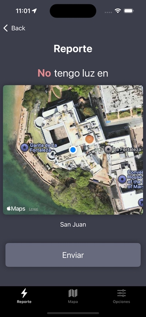

┌─ VISTA PREVIA DE LA APP ────────────────────────────────────┐
Pantalla Principal

Interfaz simple de reporte con un solo toque
Detección de Ubicación
Detección automática de ubicación para reportes precisos
Vista del Mapa de Apagones

Mapa en tiempo real mostrando apagones en tu área
Acercamiento Detallado del Mapa

Control deslizante de series de tiempo para rastrear la progresión de apagones